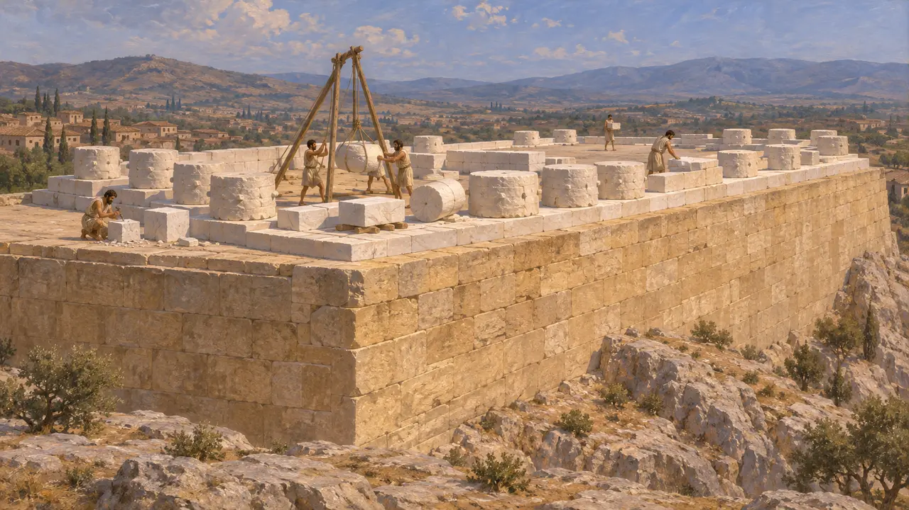
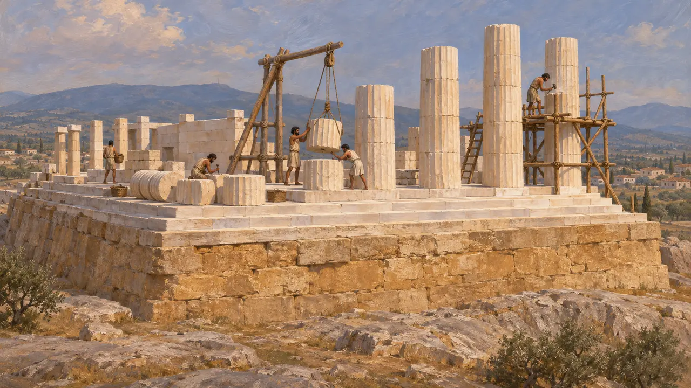
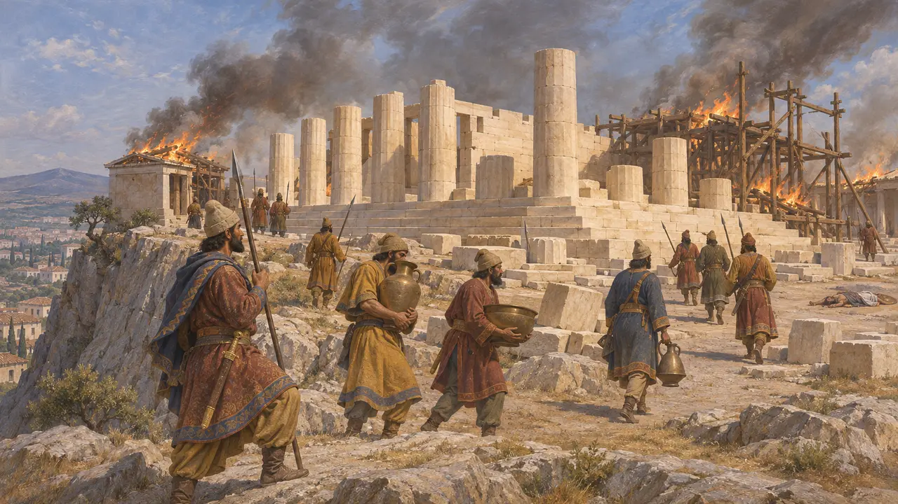
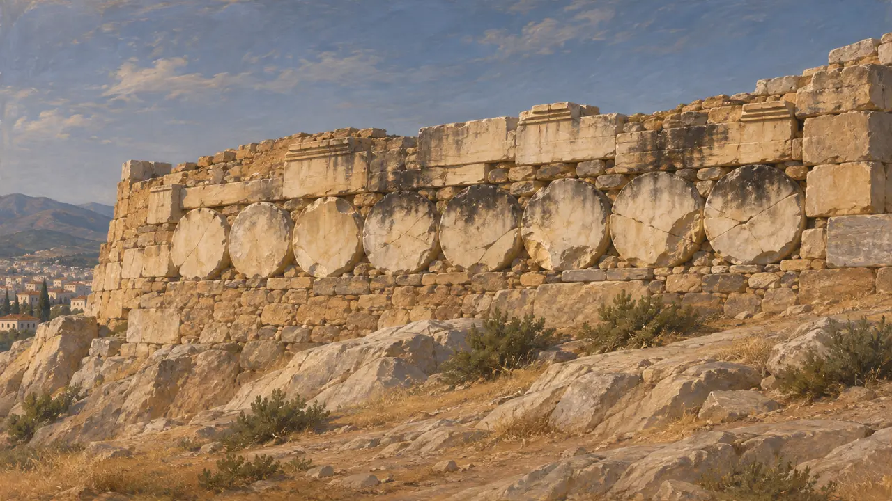
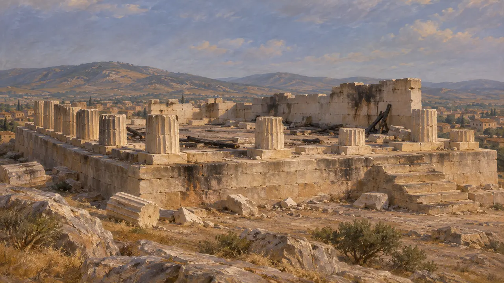

پارتنون کهنتر
معبد مرمرین ناتمام آتنا بر آکروپولیس آتن، حدود 490-480 پ.م.
پارتنون کهنتر معبدی بزرگ برای آتنا بود که بر سکویی از سنگ آهک با ستونهایی از مرمر پنتلیک برپا میشد. هنگامی که پارسیان در سال 480 آکروپولیس را گرفتند، این معبد هنوز در دست ساخت بود. بعدها استوانههای ستونهای آتشخوردهٔ آن را در دیوار آکروپولیس به کار بردند و سکوی آن، پارتنونی را که پریکلس در سال 447 آغاز کرد، بر دوش گرفت.
در بازی: پارتنون کهنتر بهعنوان بنایی تاریخی بر نقشهٔ مرحله قرار دارد و بازیکن آن را نمیسازد. بازی آغاز ساخت آن را پس از ماراتن میداند که رایجترین دیدگاه امروزی است، هرچند تاریخنگاران هنوز دربارهٔ این تاریخ بحث میکنند.

معبدی مرمرین بر سکویی از سنگ آهک
در اسنادکاوشهای دههٔ 1880 و پژوهشهای بعدی سکویی عظیم از قطعهسنگهای آهکی را نشان میدهد که در سوی جنوبی، جایی که صخره شیب میگرفت، ژرفتر ساخته شده بود. سازندگان بر این سکو ساخت معبدی از مرمر سفید کوه پنتلیکوس را آغاز کرده بودند که از نخستین بناهای بزرگ مرمرین آتن بود. هرگز جز بخشهای پایینی آن بر جای نهاده نشد. بسیاری از استوانههای ستون هنوز رویهٔ زبر محافظی را دارند که سنگتراشان میبایست در پایان کار میتراشیدند.
B. H. Hill, The Older Parthenon, American Journal of Archaeology, 1912; J. M. Hurwit, The Athenian Acropolis, 1999

تاریخگذاری آغاز کار
مورد مناقشهو. ب. دینزمور استدلال کرد که ساخت این معبد اندکی پس از ماراتن در سال 490 پ.م. آغاز شد، احتمالاً بهعنوان پیشکش سپاس برای آن پیروزی. دیگران بر این باورند که سکوی سنگ آهکی کهنتر است و به طرحی پیشین تعلق داشته و معبد مرمرین در مرحلهٔ دوم بر فراز آن افزوده شده است. پیوند با ماراتن محتمل است، اما بر شواهد معماری و استنتاج استوار است، نه بر هیچ متن باستانی.
W. B. Dinsmoor, The Date of the Older Parthenon, American Journal of Archaeology, 1934; J. M. Hurwit, The Athenian Acropolis, 1999

تسخیر آکروپولیس به دست پارسیان
روایت باستانیهرودوت میگوید که در 480 پارسیان از دامنهٔ پرشیب آکروپولیس در نزدیکی نیایشگاه آگلاوروس بالا رفتند. آنان آتنیانی را که مانده بودند کشتند، پرستشگاه را غارت کردند و سراسر ارگ را به آتش کشیدند. او از معبد ناتمام نامی نمیبرد، اما این معبد در همان محدودهای بود که او سوخته توصیف میکند.
Herodotus 8.53

استوانههای ستون در دیوار شمالی
در اسنادپس از جنگ، آتنیان دیوار شمالی آکروپولیس را از نو ساختند. آنان ردیفی از استوانههای مرمرین ستونهای این معبد را در کنار سنگهایی از معبد کهن آتنا در آن کار گذاشتند. این استوانهها ترکخورده و از آتش تغییررنگ دادهاند، که نشان میدهد داربست چوبی پیرامونشان سوخته است. آنها هنوز از آگورای پایین پیدا هستند. بسیاری از تاریخنگاران این را یادآوری آگاهانه از غارت شهر میدانند، هرچند این کار در عین حال بهرهگیری دوباره از سنگهای سنگینِ دم دست نیز بود.
J. M. Hurwit, The Athenian Acropolis, 1999

سوگند پلاته
مورد مناقشهلوکورگوسِ سخنور، که حدود 330 پ.م. مینوشت، و بعدها دیودوروس میگویند یونانیان پیش از نبرد پلاته در 479 پ.م. سوگندی یاد کردند. در این سوگند پیمان بستند که معابدی را که پارسیان سوزانده بودند بازسازی نکنند و آنها را به یادگار نگه دارند. خودِ تئوپومپوس نیز در همان روزگار این سوگند را جعلی آتنی خوانده بود، و نسخهای از سدهٔ چهارم که در آخارنای بر سنگ نقر شده این بند را ندارد. پژوهشگران هنوز همرأی نیستند، اما این محوطه بهراستی حدود سی سال نیمهکاره ماند تا آنکه پارتنونِ دوران پریکلس بر همان سکوی کهن برافراشته شد.
Lycurgus, Against Leocrates 81; Diodorus 11.29; Theopompus, FGrH 115 F 153
منابع
- Herodotus 8.53
- J. M. Hurwit, The Athenian Acropolis, 1999
- W. B. Dinsmoor, The Date of the Older Parthenon, American Journal of Archaeology, 1934
- B. H. Hill, The Older Parthenon, American Journal of Archaeology, 1912
- Lycurgus, Against Leocrates 81
- Diodorus 11.29